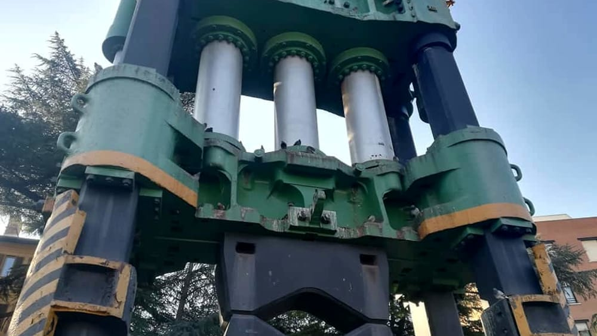

Pressa
Menu
Home
Impostazioni
Lista
Pressa di Terni
EN

La pressa da dodicimila tonnellate risale al 1934 quando alla Società "Terni" fu affidata la realizzazione dei programmi di armamento che richiedevano l'allestimento di una nuova flotta di navi da battaglia. Nell’ambito del progetto di ammodernamento degli impianti, fu ordinata alla ditta inglese Davy Brothers. Per più d'una caratteristica inedita, venne subito considerata avanguardia del progresso tecnologico.